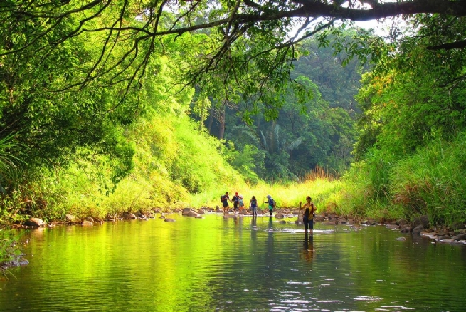
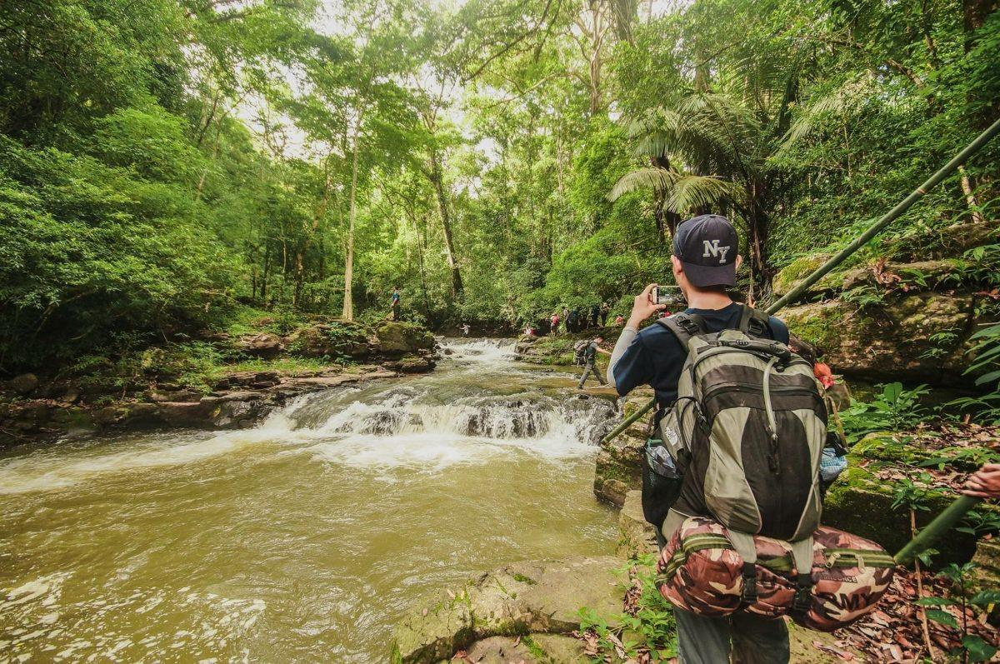
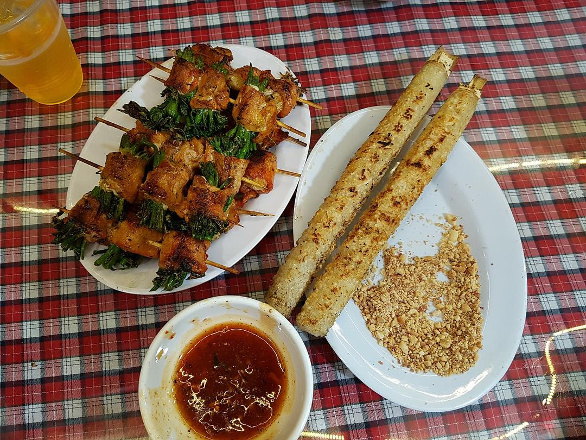

Khu vườn quốc gia với hệ thực - động vật phong phú, thuộc địa phận huyện Phước Long, tỉnh Bình Phước. Đây là nơi lưu trữ nhiều loại gen quý, hiếm và nơi bảo tồn hệ sinh thái ổn định.
Tất nhiên, chính bởi được lưu giữ và bảo tồn những gì vốn có, Bù Gia Mập là điểm đến yêu thích với những ai thích mạo hiểm và thiên nhiên hoang dã. Trong khuôn viên của vườn quốc gia có những con thác đổ lớn, cũng là nơi dừng chân của bao kẻ lữ hành.
Trước khi đi tham quan khu vườn quốc gia này, bạn liên hệ với ban quản lý để xin phép và nhờ người hướng dẫn.
 